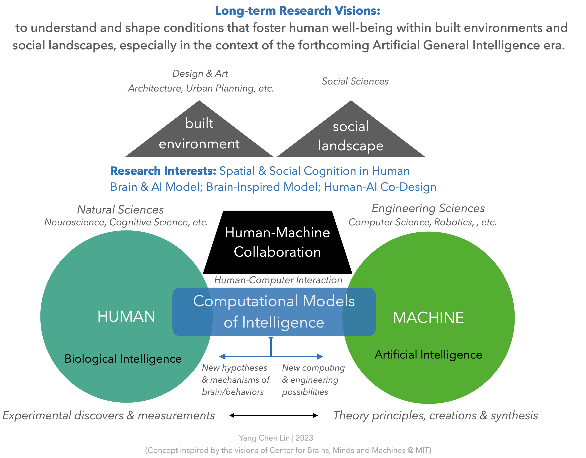

YC
My research explores the spatial, social, and design cognition of humans and AI in built environments and social landscapes. Grounded in everyday, real-world experiences, my work draws on approaches from human-computer interaction (HCI) and cognitive computational neuroscience (cognitive science/psychology + neuroimaging + machine learning / deep learning).
With a long-term commitment to human well-being, my research advances two intertwined directions. First, I develop evidence-based computational design tools — integrating human experience data (neuroimaging, eye-tracking, and self-report) into AI-assisted workflows — to empower humans and AI to collaboratively shape architectural experiences throughout the design process. Second, I examine how individuals represent and navigate their relationships with social issues — exploring the psychological and neural mechanisms of distance — and how conversational AI measures and reshapes these dynamics at scale.
In parallel, I pursue fundamental questions in ML/DL through a NeuroAI (brain-inspired / informed) lens, addressing shortcut learning, biologically plausible propagation mechanisms, cognitive map formation in the hippocampus, and self-supervised learning grounded in cerebellar computation.
With a long-term commitment to human well-being, my research advances two intertwined directions. First, I develop evidence-based computational design tools — integrating human experience data (neuroimaging, eye-tracking, and self-report) into AI-assisted workflows — to empower humans and AI to collaboratively shape architectural experiences throughout the design process. Second, I examine how individuals represent and navigate their relationships with social issues — exploring the psychological and neural mechanisms of distance — and how conversational AI measures and reshapes these dynamics at scale.
In parallel, I pursue fundamental questions in ML/DL through a NeuroAI (brain-inspired / informed) lens, addressing shortcut learning, biologically plausible propagation mechanisms, cognitive map formation in the hippocampus, and self-supervised learning grounded in cerebellar computation.

Education
03/2025 – Present
M.S. in Information Systems and Applications
National Tsing Hua University (NTHU), Hsinchu, Taiwan · Ranked 1st in Entering Cohort
09/2021 – 09/2024
M.S. in Cognitive Neuroscience (transferred)
National Yang Ming Chiao Tung University (NYCU), Taipei, Taiwan · Ranked 1st in Entering Cohort
09/2014 – 07/2019
B.Sc. Biological Science & Technology
National Chiao Tung University (NCTU), Hsinchu, Taiwan · Minor in Design & Innovative Technology (Architecture/HCI)
Research Experience
06/2023 – 09/2025
Research Intern
AI4SG Lab, Dept. of CS, National University of Singapore · Supervisor: Yi-Chieh (EJ) Lee, Ph.D.
10/2020 – 02/2025
Research Assistant
Human-Centered Machine Intelligence Lab, NTHU · Supervisor: Po-Chih (Bruce) Kuo, Ph.D.
03/2021 – 08/2021
Research Assistant
Cognitive Neuroimaging Lab, NYCU · Supervisor: Nissen Wen-Jui Kuo, Ph.D.
06/2016 – 06/2019
Undergraduate Researcher
Brain and Cognitive Sciences Lab, NCTU · Advisor: Chih-Mao Huang, Ph.D.
Academic Service
2023 – present
Reviewer
CHI'23 (LBW), CHI'25 (LBW), CHI'26, IUI'26, CogSci'26, Nature Scientific Data
2020
Student Volunteer
TAICHI 2020 Conference · Taipei, Taiwan
Selected Funding & Awards
2025, 2026
Student Travel Grant, National Science and Technology Council (NSTC), Taiwan
2025
PhD Research Fellowship, National Science and Technology Council (NSTC), Taiwan
2018
Student Travel Grant, Higher Education Sprout Project, Ministry of Education (MoE), Taiwan
2017
Fellowship for College Student Participation in Research Projects, MoST, Taiwan
Other Related Experience
08/2024
Scholarship Student
Moving Boundaries: Human Sciences & Future of Architecture · Stockholm & Helsinki
12/2022
Student
Online Asian Machine Learning School (ACML) · Virtual
07–08/2021
Student
Computational Neuroscience, Neuromatch Academy · Virtual
08–12/2017
Research & Space Intern
Plan b Inc. · Taipei, Taiwan
08–12/2017
Adjunct Research Assistant
Institute of Architecture, NCTU · Hsinchu, Taiwan
09/2015–08/2017
Director
Community of Social Innovation & Entrepreneurship, NCTU
Research Skills
Development
PythonC++GitDockerReactNode.jsMongoDBFigmaBlenderClaude Code
Deep Learning
Representation learningSelf-supervised learningBrain–model alignmentComputer vision (3D/video)LLM fine-tuning
Neuroimaging
fMRIEEGEye-trackingISCRSAEncoding modelfMRIPrepFSLFreeSurferSPM12nilearn
Methods
Behavioral experimentPsychophysicsFormative studyUser interviewQualitative analysisStatistical modeling